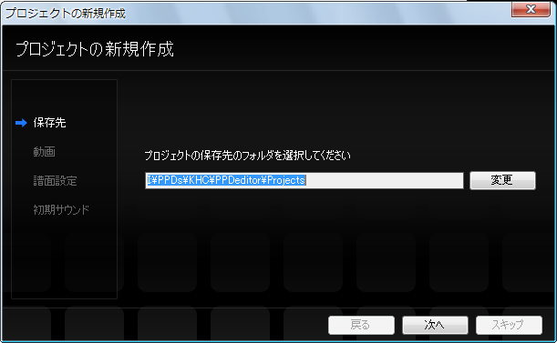
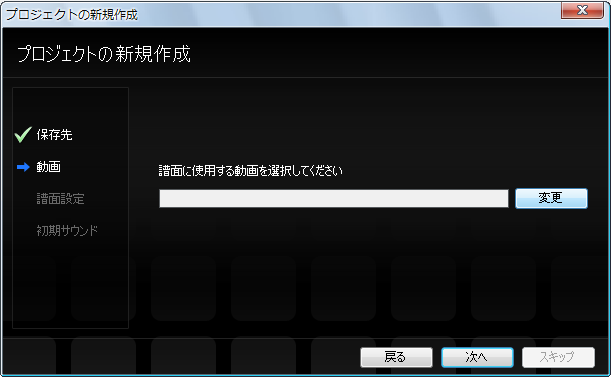
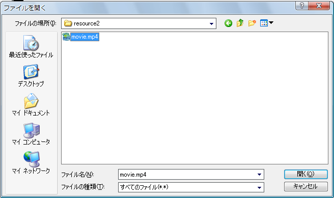
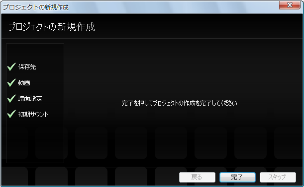
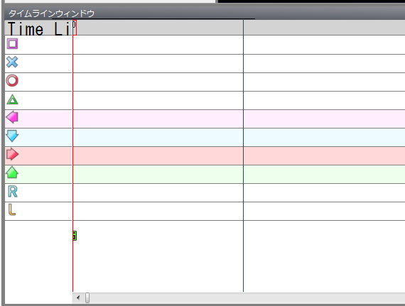
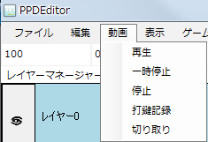

まず、使用する動画を用意します。（ここでは名前をmovie.mp4とする）
PPDEditorを起動し、ファイル→開く→プロジェクトの新規作成を選択します。

すると、プロジェクトの新規作成ダイアログが表示されるのでダイアログに従って設定を行います。
まず、プロジェクトの保存先を選択します。通常はそのままで問題ないので次へのボタンを押します。

次は、使用する動画を選択します。
変更ボタンを押すとダイアログが表示されるので、movie.mp4が保存されているフォルダに移動し、movie.mp4を選択してOKを押します。


次に、譜面の名前とプロファイルを設定します。
譜面の名前には曲名（あるいはもっと分かりやすいものがあればそれも加えましょう)を入力します。
譜面のプロファイルにはAC風にしたい場合はACを選択してください(ACが何か分からない方はNormalで構いません)
（※プロジェクト作成後に変更することもできます）

次に初期サウンドの設定を行います。
通常であれば、表示されているままのサウンド(タンバリンの音)で構いません
（※プロジェクト作成後に変更することもできます）

完了のボタンを押します。

動画を再生・一時停止をしてみましょう。
まず、タイムライン(あるいはゲームウィンドウ)をフォーカスします（灰色になればフォーカスされています）

タイムライン（あるいはゲームウィンドウ）がフォーカスされた状態でスペースキーを押すと、
再生・一時停止が切り替わります。
また、再生、一時停止、停止はメニューバーからも行う事が出来ます。

次は、譜面の初期設定を行います。
次へ